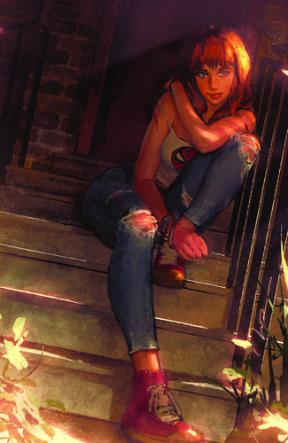
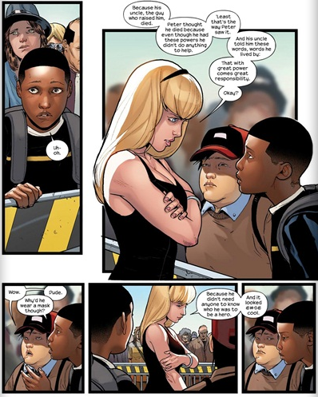
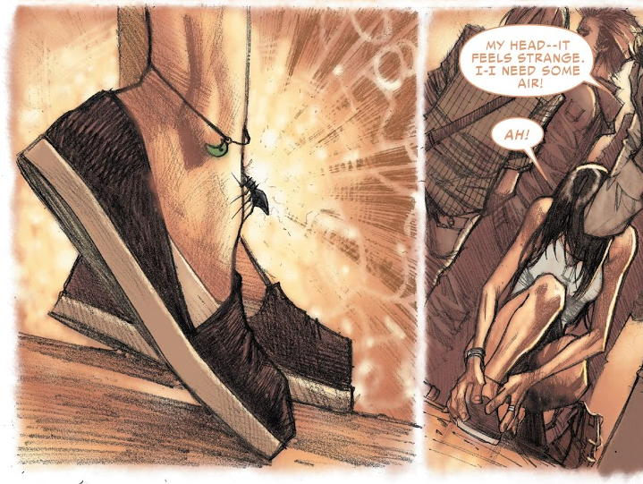
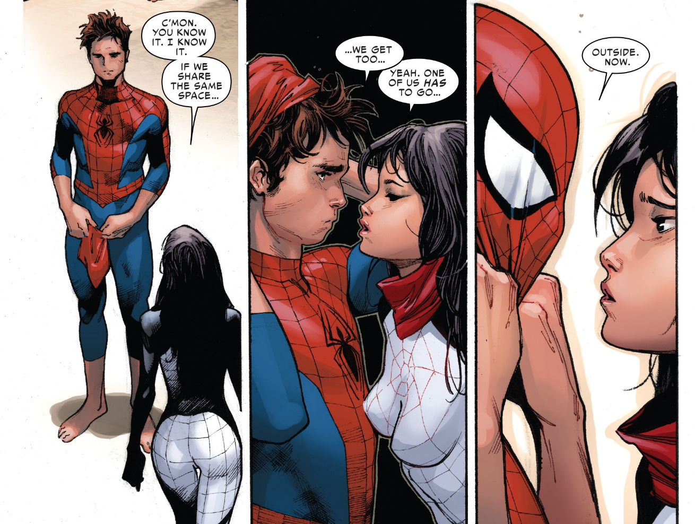
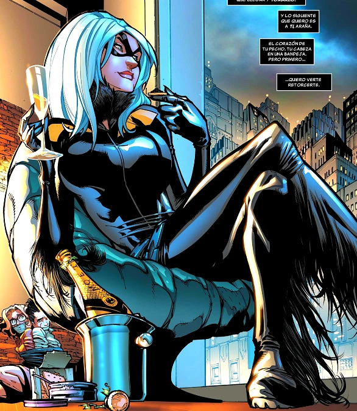
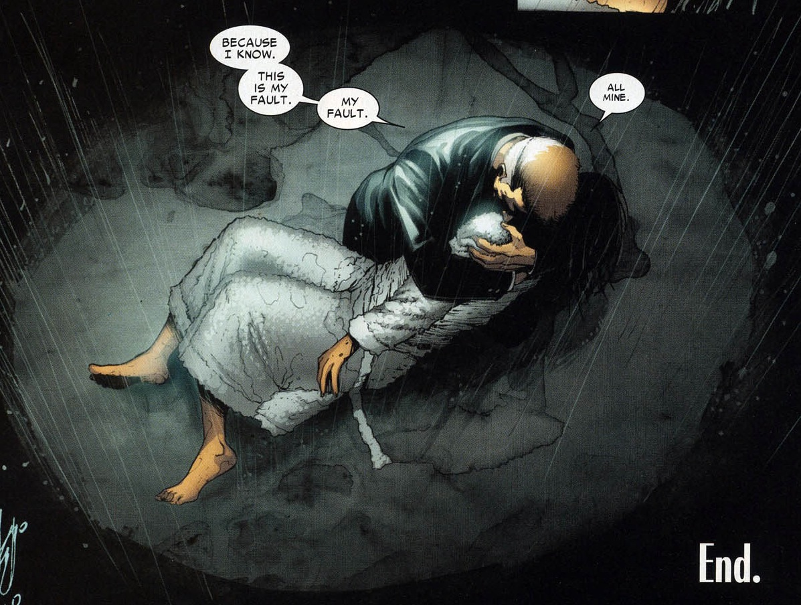

Mary Jane Watson es el principal interés amoroso de Peter Parker, alias Spider-Man. En una ocasión se casó con él, pero más adelante, tras una alteración de la realidad hecha por el demonio Mephisto, este evento jamás sucedió. Ahora ella es una de las pocas personas que saben su identidad secreta, y aún sigue apoyándolo como su amiga y confidente más cercana.
ORIGEN
Philip y Madeline Watson se conocieron en la universidad, donde se enamoraron. Llevaban casados año y medio cuando nació Gayle, Mary Jane nació cuatro años después, entonces Philip, ya un reputado profesor quiso dedicarse a escribir. Incapaz de escribir bien, achacaba esto a las niñas, teniendo aterrorizadas a su mujer y a ellas. Desquiciado comenzó a vagar de un lado para otro llevándose a su familia consigo. A las niñas les costaba adaptarse cada vez a un lugar nuevo y, mientras que Gayle practicaba ballet durante horas para combatir la soledad, Mary Jane se convirtió en el payaso de la clase intentando gustar a la gente.

La vida siguió para Mary Jane normalmente hasta que un día, su tía y la de Peter arreglaron una cita entre los dos, cuando Mary Jane acudió, Peter quedó sorprendido de su belleza. Durante un tiempo en el que Mary Jane se había trasladado ya a Nueva York. Peter dudaba entre dos chicas, Gwen Stacy o la propia Mary Jane. Tiempo después, Gwen moriría asesinada por Green Goblin y Peter quedaría devastado.
NUEVOS VENGADORES
Tras la destrucción de su casa y la de Tía May a manos de Charlie Weiderman, Peter decidió aceptar la oferta de su empleador el millonario Tony Stark para mudarse a la Torre Stark. El edificio era la sede de los Nuevos Vengadores, grupo al que su marido se había unido recientemente. Mary Jane se adaptó con rapidez al nuevo entorno, feliz de formar parte del mundo al que pertenecía el alter ego de Peter.
Cuando Morlun volvió a atacar a Spider-Man dejándolo al borde de la muerte, Mary Jane se quedó con él en el hospital. Esa misma noche, Morlun acudió para terminar de alimentarse, Mary Jane intentó interponerse entre él y su marido, pero el poderoso ser la apartó rompiéndole un brazo. Peter se levantó de pronto y saltó sobre él mostrando por primera vez sus aguijones. Tras matar a Morlun, Peter pareció morir entre sus brazos. Pese a todo Mary Jane no perdió la esperanza que sobreviviera, como en efecto lo hizo.
LA GUERRA CIVIL
Durante los acontecimientos de la Guerra Civil , Mary Jane apoyó la decisión de Peter de hacer pública su identidad secreta. Sin embargo, eso la puso en el punto de mira de antiguos enemigos de Spider-Man. Así, mientras realizaba un ensayo para una función de teatro en la que trabajaba, fue atacada por el Enjambre, un científico nazi cuyo cuerpo estaba formado íntegramente por abejas. Afortunadamente, Mary Jane logró derrotarlo activando los aspersores del sistema antincendios del local.
Poco después, Peter se dio cuenta que había cometido un gran error y que se había equivocado de bando. Por este motivo decidió huir y unirse a los Vengadores Secretos del Capitán América. May y MJ decidieron seguirlo y se mudaron a un motel. A punto de concluir la Guerra Civil, Kingpin envió a un asesino a sueldo para que matara a Spider-Man. El tirador descubrió el escondrijo de los Parker y disparó sobre Peter, quien se apartó agarrando a Mary Jane. La bala perdida terminó hiriendo de gravedad a Tía May.
Desesperados para salvar a Tía May y sin poder revelar la identidad de Peter al haberse opuesto al Acta de Registro Super Humano, los Parker la ingresaron en varios hospitales bajo su nombre de soltera. Desesperados como estaban, después de haber llamado a todas las puertas en busca de una posible cura para su estado crítico, finalmente Mephisto tentó al matrimonio con salvarla a cambio de su amor. El demonio usaría sus poderes para curar a Tía May y restablecer la identidad secreta de Spider-Man a cambio de que MJ y Peter nunca se hubieran casado. MJ accedió y Mephisto usó sus inmensos poderes para alterar la realidad y cumplir su promesa.
MILES MORALES
Miles Gonzalo Morales es un adolescente de ascendencia afroamericana y latina residente en Brooklyn; quien después de haber sido mordido por una araña genéticamente modificada diseñada por el némesis de Spider-Man, Norman Osborn, asumió la identidad de Spider-Man en el Universo Ultimate tras la muerte de Peter Parker.
Posteriormente, tras las Guerras Secretas y la destrucción del multiverso, Miles y su familia fueron desplazados a la nueva Tierra-616 y comparte el título de Spider-Man con el Peter Parker de este universo.
ORIGEN
Miles es hijo de un padre afroamericano y una madre puertorriqueña. Nació y se crió en Brooklyn dotado con una aptitud para la ciencia al igual que su predecesor, Peter Parker. Miles, después de haber sido galardonado con el último puesto en la Lotería para una beca en la escuela autónoma, visitó a su tío Aarón, contra los deseos de sus padres, quienes pensaban que Aaron era una mala influencia para él.

Mientras Miles y su tío discutían las oportunidades que la escuela podría abrir para su futuro, la araña genéticamente mejorada con la Fórmula OZ que Aaron había robado de Oscorp salió de su bolsa y mordió a Miles en la mano, lo que le hizo perder el conocimiento y convulsionar. Más tarde, cuando Miles despierta, Aaron es confrontado por Jefferson Davis el padre de Miles. Durante esta breve discusión, Miles huye del apartamento de Aaron. Mientras se ocultaba de su padre, Miles descubrió que había obtenido habilidades sobrehumanas como camuflaje, agilidad mejorada, y una especie de rayo aturdidor.
Luego él y Ganke asisten al funeral de Spider-Man y Miles habla con Gwen Stacy, preguntándole por qué Peter se convirtió en un superhéroe. Ella le explica que lo hizo porque, "Un gran poder conlleva una gran responsabilidad" y vivió su vida bajo esa premisa. Con su nueva inspiración, Miles decide asumir el legado de Spider-Man en honor a Peter Parker
NUEVO SPIDERMAN
El primer acto heroico de Miles como el nuevo Spider-Man fue confrontar al villano conocido como el Canguro. Después de vencerlo con su rayo venenoso y huir del lugar, Miles pensaba que el traje que vestía era de mal gusto tras escuchar los comentarios hechos por los civiles durante su pelea con el villano. Mientras patrullaba en las azoteas, Miles fue atacado por Spider-Woman quien desenmascara a Miles y lo detiene para después llevarlo al Triskellion, donde Nick Fury le revela que sabe todo acerca de él y su familia, incluyendo la actividad criminal de su tío, el Prowler.
Antes de que él y Miles pudieran hacer más preguntas, Electro escapa de la sala médica dentro del Triskelion y trata de huir de las instalaciones. Durante su escape, Electro fue atacado por los Ultimates, y con la ayuda de Miles usando su habilidad de camuflaje y el uso de su rayo venenoso para atacar a Electro por la espalda, son capaces de apresarlo nuevamente. Al día siguiente, Jessica apareció en la escuela de Miles con una caja que contenía una versión modificada del traje de Spider-Man en colores negro y rojo, diciéndole que Fury le daría una oportunidad de probarse a sí mismo en su rol como superhéroe.
CINDY MOON
Cindy Moon también conocida como Silk fue una adolescente que acudió a la misma exhibición científica a la que asistió Peter Parker donde fue picada por la misma araña que convirtió a Peter en Spider-Man. Al poco tiempo de esto ella fue contactada por Ezekiel Sims quien le advirtió sobre Los Inheritors y del papel tan especial que ella jugaría en todo esto y para protegerla de Morlun, Ezekiel la encerró en una bóveda secreta, aislándola durante años del resto del mundo. En los 10 años que Silk estuvo enclaustrada, ella siempre tuvo conocimiento de la identidad de Spider-Man, y se volvió una gran seguidora y fanática de éste. Cuando el Ojo del Watcher explotó, Peter descubrió la existencia de Cindy y en donde se encontraba. Spider-Man acudió rápidamente a liberar a Cindy de su cautiverio lo cual fue percibido por Morlun y su familia dándose inicio a La Gran Cacería. Tras la derrota de los Inheritors, Cindy se centró en encontrar a su familia al mismo tiempo que trabajaba para Fact Channel y luchaba contra el crimen como Silk. Tras encontrar a su familia y estabilizar su vida, Cindy ha formado parte de varios equipos superheroicos como los Agents of Atlas y recientemente ha vuelto a trabajar como periodista en Threats and Menaces.
LA MORDEDURA DE LA ARAÑA
En un experimento científico auspiciado por la Corporación General Techtronics que implicaba el uso de rayos radiactivos, una araña fue expuesta accidentalmente a la radiación. En sus últimos momentos de vida, esta mordió el ser vivo más cercano, Peter Parker. Esto llevó a Peter a obtener poderes arácnidos y dio a luz al asombroso Spider-Man.

Sin embargo, Peter no fue el único mordido por la araña, Cindy también fue picada por el mismo arácnido. Al igual que Peter, Cindy pronto desarrollo poderes arácnidos que se salieron fuera de control, lo cual preocupo a sus padres. Esta situación no duro mucho puesto que Ezekiel Sims se presento ante la familia Moon y se ofreció para ayudar a Cindy. Bajo su tutela, la joven pulió sus habilidades arácnidas pero eventualmente Ezekiel la encerró en un búnker fortificado para protegerla de Morlun.
PECADO ORIGINAL
Tras descubrir acerca de Cindy por uno de los ojos del Watcher que libero toda clase de secretos en Nueva York. Spider-Man la libero del búnker convenciéndola de que Morlun estaba muerto. Después de balancearse alrededor de la ciudad, Cindy le pregunta como murió Morlun, por lo cual Peter responde que de hecho había matado a Morlun en dos ocasiones, noticia que pone a Cindy en cólera y ataca a Spider-Man al darse cuenta de que Morlun aún podría volver y que esos 13 años en el búnker habían sido para nada.
Durante su lucha, sin embargo, ambos sienten algún tipo de conexión a través de su sentido arácnido que Spider-Man había notado antes y el combate termina con los dos besándose.
Silk y Spider-Man continúan explorando sus lazos a un nivel más íntimo pero Peter le pone fin a esto al momento en que Cindy intenta quitarle su máscara. Sin embargo Silk le hace saber a Spider-Man que conoce su identidad como Peter Parker, lo que deja muy sorprendido a Parker. Al analizar lo que les está pasando, Cindy explica que tal vez es una especie de conexión primitiva la que los une, lo cual se deba al ser ambos picados por la misma araña. Cuando Spider-Man dice que fue un error haberla liberado e insinúa regresarla al búnker, Silk le replica que ya es muy tarde para eso, además no quiere perder otros 10 años recluida en ese lugar.
UNIVERSO SPIDERMAN
Silk visita a Peter en su apartamento tras varias semanas de no verlo y le comenta que tiene una solución para su problema de “atracción arácnida”, la cual radica en que él se marche y deje la ciudad de Nueva York a su cuidado, propuesta que Peter declina rápidamente. Cuando ambos salen a patrullar se encuentran con un robo de banco realizado por Looter y los Spiderlings. Mientras luchan contra los delincuentes, Silk y Spider-Man reciben la inesperada ayuda de Spider-Woman (Jessica Drew), Spider-Girl (Anya Corazón), Spider-Man 2099, Spider-UK, Spider-Girl (May Parker) y Spider-Ham.
El portal los lleva a la Tierra-928, dimensión en la que se encuentran con el ejército de Superior Spider-Man. Este último escanea a Silk señalando su atractivo (debido a que tiene él tiene el cuerpo de Peter) y que sus lecturas de energía superan la escala haciendo de ella y Kaine un peligro potencial para que los Herederos logren encontrarlos. Desafortunadamente esto sucede y Daemos aparece para cazarlos. Gracias al esfuerzo combinado de ambos equipos, logran vencer a Daemos quien es asesinado por Superior Spider-Man.
Los tres llegan a un mundo donde los humanos y alienígenas conviven en un solo entorno. Spider-Woman se separa de Silk y Spider-Man Noir al llegar a un pueblo cercano para buscar algunas provisiones y les pide a ambos mantener un bajo perfil. Estas advertencias caen en oídos sordos cuando Silk y Noir enfrentan a unos delincuentes con armaduras; tras vencerlos el sentido arácnido de Silk enloquece advirtiéndole de la llegada de los gemelos Brix y Bora, quienes logran encontrarla.

Después de que Los Herederos son derrotados y el Tejedor Maestro es asesinado por Otto Octavius, Morlun, enfurecido, atacó a Spider-Man para matarlo por arruinar sus planes. Con un plan en mente, Spider-Man creó un portal a la Tierra-3145, donde apresó a Morlun y después escapó gracias a Silk, quien le reveló que al ser mordidos por la misma araña ella podía sentirlo a través del Multiverso. Luego de recuperarse, las arañas abrieron un portal a la Tierra-982 para enviar a casa a Mayday.
Peter derrotó a Otto y Karn lo regresó a su respectiva línea temporal donde olvidaría todo lo ocurrido. Luego de descubrir el fatídico final de la Tierra-833 por culpa de las incursiones impidiendo así que Spider-UK regresara a su dimensión natal, Silk le pregunto al nuevo Tejedor si Los Herederos serían capaces de sobrevivir en la Tierra-3145 sin necesidad de absorber la esencia de tótems arácnidos, y Karn le contestó que su familia podía subsistir consumiendo la fuerza vital de cualquier animal y que dicho universo estaba lleno de arañas mutantes con las cuales podían alimentarse.
Una vez que ella, Peter y Jessica regresaron a la Tierra-616, Cindy se dio cuenta de que habían estado fuera por varios días y esperaba que Fact Channel no la hubiera despedido. Tras esto, Peter se despidió de ambas decidido a manejar su propia compañía.
FELICIA HARDY
Felicia Hardy, mejor conocida como Black Cat es una ladrona de guante blanco y heroína, que ha estado relacionada con Spider-Man de muchas maneras.
ORIGEN
Felicia Hardy nació en Queens, Nueva York. Toda su vida creció como una consentida niña de papá, intentando emular a su querido padre Walter Hardy en todo. Cuando él desapareció de su vida, la madre de Felicia le dijo que él había muerto en un accidente de avión. Felicia descubrió posteriormente la verdad: Walter Hardy era el mejor ladrón de guante blanco del mundo, pero sus crímenes habían acabado con él. Seguía vivo, pero languideciéndose en prisión.

Esto la animó a no conformarse con el segundo lugar nunca, si a ella le gustaba el baloncesto, trabajaría para ser jugadora de baloncesto y no sólo porrista. Durante su primer año en la universidad, Felicia fue violada por su novio Ryan, hecho que la marco para siempre. Felicia se sintió totalmente indignada ante el hecho de haber sido una víctima, se puso a pensar en las consecuencias que le traería "matar a su agresor". Abandonó los estudios y se impuso un riguroso régimen de entrenamiento físico que incrementó su fuerza, resistencia, agilidad y dominó las artes marciales.
Para justificar su seudónimo, decidió crear en la mente de sus adversarios, la impresión de que podía traerles "mala suerte" gracias a su poder. Antes de cometer algún delito en una cierta zona, colocaba objetos de forma estratégica para que sus posibles perseguidores tuvieran "accidentes". Gracias a estos trucos convenció a su principal oponente, Spider-Man, de que tenía el poder de afectar las probabilidades.
Cuando por fin fue capturada, Black Cat fingió locura y, tiempo después, escapó. Se sentía fuertemente atraída por Spider-Man y se unió a él para combatir criminales, logrando que las autoridades de Nueva York le concedieran una amnistía por sus antiguos delitos. Spider-Man también se había enamorado de ella e incluso le había revelado su identidad secreta. A cambio, ella le confesó que no tenía poderes sobrehumanos y, tras ser gravemente herida en un enfrentamiento contra Doctor Octopus, Spider-Man consideró que era demasiado peligroso que siguiera luchando junto a él contra sus adversarios sobrehumanos.
Tras la aprobación del Acta de Registro Superhumano, Felicia decidió registrarse y se unió a los Héroes de Alquiler, un grupo de mercenarios dirigidos por Misty Knight y Colleen Wing. Su grupo decidió que no se involucraría directamente en la Guerra Civil y actuó a caballo entre los dos bandos apresando a supervillanos que se negaban a registrarse. Felicia empezó a intimar con el Paladín, quien también se había unido a los Héroes de Alquiler, pero su falta de escrúpulos y el hecho que se vendiera al mejor postor mermaron la relación.
EL REGRESO DE BLACK CAT
Black Cat volvió a la vida de Spider-Man cuando ella estaba entrando ilegalmente en el apartamento de Dexter Bennett para robar una carpeta. Allí ambos encontraron el cuerpo de un hombre muerto detrás de una pintura de Bennet, lo que fue una sorpresa para Felicia. Sin perder tiempo Felicia intenta marcharse con lo que estaba buscando, pero el cuerpo que hallaron era una trampa explosiva. Tras el atentado Black Cat y Spider-Man sobrevivieron a las puntas de acero que estallaron desde el cuerpo, sólo para enfrentar al hombre detrás de la trampa: El Diablo. Después de una pelea con el Diablo, Spidey y Black Cat duermen juntos con todas las luces apagadas, por lo que Felicia no pudo ver la cara de Peter. Felicia recuerda el desenmascaramiento de Spider-Man pero simplemente no puede recordar quién estaba bajo la máscara. Luego Spider-Man y Black Cat encuentran finalmente el escondite de Diablo pero este eventualmente logra escapar.
J.J. JAMESON
J. Jonah Jameson es el ex empleador de Peter Parker. Él fue una vez el editor en jefe del Daily Bugle, y en una ocasión se convirtió en el alcalde de la Ciudad de Nueva York.
Tras renunciar a su cargo como mandatario de la Gran Manzana, Jameson aceptó un trabajo en Fact Channel News como reportero de noticias. Recientemente Jameson empezó a trabajar en Threats and Menaces.
DAILY BUGLE
J. Jonah Jameson empezó su carrera de periodista como reportero ocasional para el Daily Bugle neoyorquino, mientras todavía estudiaba en el instituto. Durante muchos años ejerció de periodista, incluyendo el tiempo pasado como corresponsal de guerra. En cierto momento, Jameson compró el Bugle, que atravesaba dificultades financieras, con el dinero obtenido de vender sus propiedades personales y su herencia. Desde entonces, el Bugle se convirtió en propiedad de la compañía Jameson Publicaciones, reservándose el cargo de director y de redactor jefe, consiguiendo revitalizar el tabloide que el Bugle ha mantenido hasta la actualidad, y dedicando desde entonces un gran espacio al material fotográfico.
SPIDER-MAN
El Daily Bugle llegó a contratar los servicios de un fotógrafo novato, que aún estaba en el instituto, y cuyo nombre era Peter Parker, aunque nadie lo sabía, el joven fotógrafo era en realidad el aventurero enmascarado conocido como Spider-Man. Desde la aparición del arácnido, Jameson se ha hecho famoso por sus editoriales contra él, además de estar en contra de otros héroes enmascarados. Spider-Man comenzó a atraer la atención del público utilizando sus poderes en teatros y programas de televisión. Pero cuando Spider-Man capturó a un ladrón, Jameson se sintió ultrajado porque ese artista enmascarado se aprovechaba de sus peligrosos poderes para tomarse la justicia por su mano. Jameson comenzó a criticar a Spider-Man en los editoriales de su periódico, y logró sembrar la duda en sus lectores sobre los motivos del misterioso Spider-Man. Como consecuencia, Spider-Man fue incluido en la lista negra de toda la industria del espectáculo.

Poco después, mientras John Jameson, el hijo de J.J. Jameson, se encontraba realizando una misión orbital terrestre, su cápsula espacial sufrió un fallo en el módulo de mando. Spider-Man y Jonah Jameson se conocieron personalmente cuando el primero acudió a ofrecer su ayuda para rescatar a John. Cuando el arácnido logró rescatar al joven Jameson, Jonah le acusó públicamente de sabotear la cápsula para salvar a su hijo y obtener publicidad, y denunció su irrupción ilegal en la base militar. Como resultado de las acusaciones, Spider-Man fue declarado fuera de la ley. Desde entonces, Jameson ha continuado las denuncias contra Spider-Man a lo largo de los años, basándolas siempre en su denuncia de los justicieros. Aunque a Jameson no parecen gustarle los superhéroes, es más tolerante con los que colaboran con el gobierno, como los Vengadores, y ha declarado en alguna ocasión su admiración por Captain America.